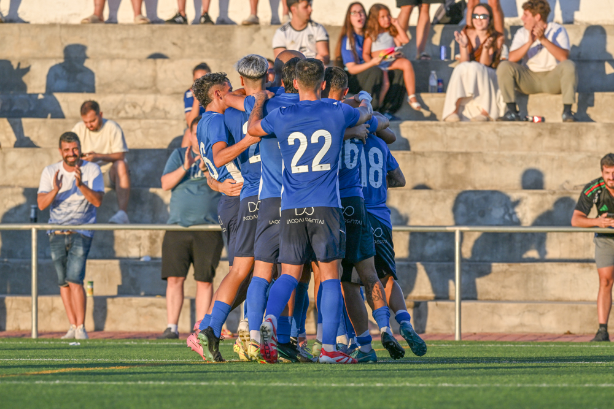
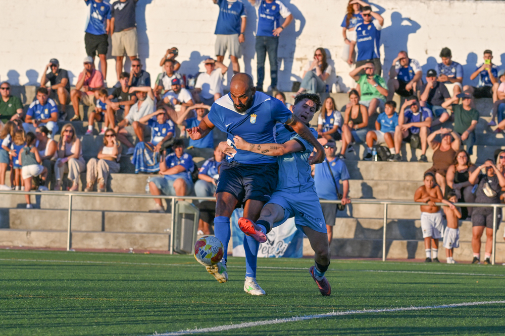
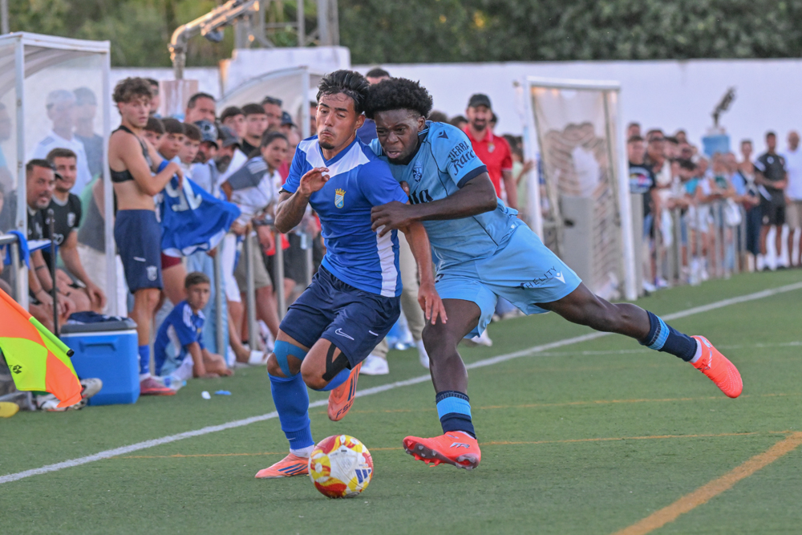

El Xerez CD encadena su segundo triunfo veraniego ante el filial del Ceuta

Foto: PuroXerecismoSegunda cita, segunda victoria. El Xerez CD sigue rodando en su pretemporada bajo las órdenes de Xavi Molist y esta vez se llevó el Trofeo Andrés Chacón Oñate tras imponerse a un correoso Ceuta B en La Barca de La Florida. Un partido trabado, sin goles hasta bien entrada la segunda parte, que los azulinos resolvieron gracias a una jugada de pizarra: un córner lanzado por Zequi que Jaime López remató de cabeza para inaugurar el marcador.
El filial caballa, todavía con el cuerpo resentido por la exigencia física propia del arranque de temporada, aguantó el chaparrón inicial y fue creciendo con el paso de los minutos, llegando a plantar cara e incluso a superar a los de Molist en algunos tramos del segundo acto. Sin embargo, el tanto de Jaime López rompió el equilibrio y sentenció el resultado.
Primera parte
Para el arranque, el técnico dispuso una zaga con Manu Galán y Josete como centrales, flanqueados por Guille Campos y Chacartegui en los costados. Isma Gutiérrez e Isuskiza se repartieron las labores de contención en el doble pivote, con Zelu y Óscar Lorenzo abiertos en banda, mientras que la dupla de ataque quedó formada por los canteranos Samu Rubiales y Rober Sánchez.
Con la camiseta azul y medias negras, el Xerez CD salió a por todas, asfixiando la salida de balón del conjunto ceutí desde el primer minuto. A los diez, Nel tuvo que emplearse a fondo para desviar a córner un cabezazo de Guille Campos, y en el saque posterior Josete rozó el gol con otro remate que se marchó alto. Dos avisos que Molist tendrá que seguir puliendo, sabiendo lo determinantes que resultan las acciones a balón parado en una categoría tan apretada como la Segunda Federación.

Foto: PuroXerecismoEl dominio azulino se tradujo en una sucesión de llegadas que merecían mejor suerte. Óscar Lorenzo probó fortuna con una vaselina desde la frontal que se topó con el larguero tras un leve roce de Nel. Poco después fue Zelu quien, de falta directa, hizo vibrar el poste con un latigazo. Y antes de cumplirse el cuarto de hora, Chacartegui exigió una gran respuesta del meta ceutí con un disparo raso y potente.
El Ceuta B, por su parte, empezó a asomar con algunas tímidas aproximaciones antes de la parada técnica para hidratarse. Tras el descanso reglamentario, Molist introdujo su primer retoque: Manu Rosado entró por Samu Rubiales, lo que llevó a Rober Sánchez a replegarse hacia la mediapunta y a Óscar Lorenzo a ocupar la punta de ataque. Con todo, el equipo fue perdiendo intensidad según avanzaba la primera mitad, después de haber concentrado su mejor fútbol en los veinte minutos iniciales.
Segunda parte
El vestuario sirvió para un cambio radical de piezas: Molist realizó diez sustituciones de golpe, dejando en el campo únicamente a Guille Campos, aunque reubicado como central. Enfrente, el Ceuta B que dirige el técnico jerezano David Álvarez "Polaco" —un equipo con vocación de jugar el balón pese a las dificultades del césped artificial— aprovechó el inicio del segundo tiempo para nivelar el partido, una fase en la que a los azulinos les resultaba muy complicado enlazar varios pases seguidos y en la que el filial caballa llegó incluso a tomar el mando del centro del campo, terreno dominado por Raúl López, Jaime López y Mario Peregrina.

Foto: PuroXerecismoEl ambiente se calentó tras una entrada de José Miguel sobre Guille Campos, antesala del primer tanto del encuentro. Zequi sacó la falta y hubo protestas por una supuesta caída de Fali dentro del área, pero el juego siguió y terminó en saque de esquina. De nuevo Zequi puso el balón en el área y esta vez Jaime López se elevó por encima de la defensa para clavarlo de cabeza: 1-0.
El colegiado anuló un segundo tanto a Mario Peregrina por un fuera de juego previo de Rubén Mesa, delantero muy vivo durante todo su tiempo en el campo, que provocó una recuperación que estuvo a punto de aprovechar Jaime Fernández gracias a su velocidad, aunque no logró batir a Nel en el mano a mano. El propio Jaime López tuvo después el segundo tras un pase de Zequi, pero su intento se marchó desviado. Nel, atento, volvió a negar el gol tanto a Zequi como a Rubén Mesa en las postrimerías del choque. La insistencia acabó dando su fruto y Mario Peregrina certificó el 2-0 definitivo cerca ya del final.
Ficha del partido
Xerez CD: Carlos Pantoja, Guille Campos (Salas, min. 75), Manu Galán, Josete, Chacartegui, Isma, Isuskiza, Zelu, Óscar Lorenzo, Samu Rubiales (Manu Rosado, min. 30) y Rober Sánchez. En la segunda mitad jugaron Marcos Alconchel, David Lachica, Fali, Jaime López, Zequi, Mario Peregrina, Rubén Mesa, Raúl López, Jaime Fernández y Ganfornina.
Ceuta B: Nel González, Magno, Naranjo, Juan Esteban, Jon Ander, Goodluck, Abraham Bueno, Antonio David, Owusu, José Miguel y Sergio González. Después entraron Pepe, Suleiman, Adán, Chairi, Miñón, Adrián, Paco Fernández, Pelayo y Pablo Vílchez.
Goles: 1-0 (min. 70) Jaime López. 2-0 (min. 89) Mario Peregrina.
Árbitro: Antonio Ruiz España, que amonestó a José Miguel y a Guille Campos.
Incidencias: XVII edición del Trofeo Andrés Chacón Oñate, disputado en el campo homónimo entre Xerez CD y Ceuta B, con temperaturas muy elevadas y notable presencia de aficionados xerecistas en el segundo compromiso veraniego de los de Xavi Molist.
← Volver a la portada